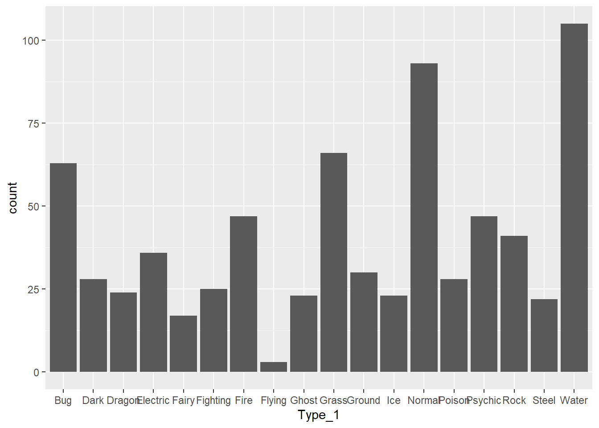
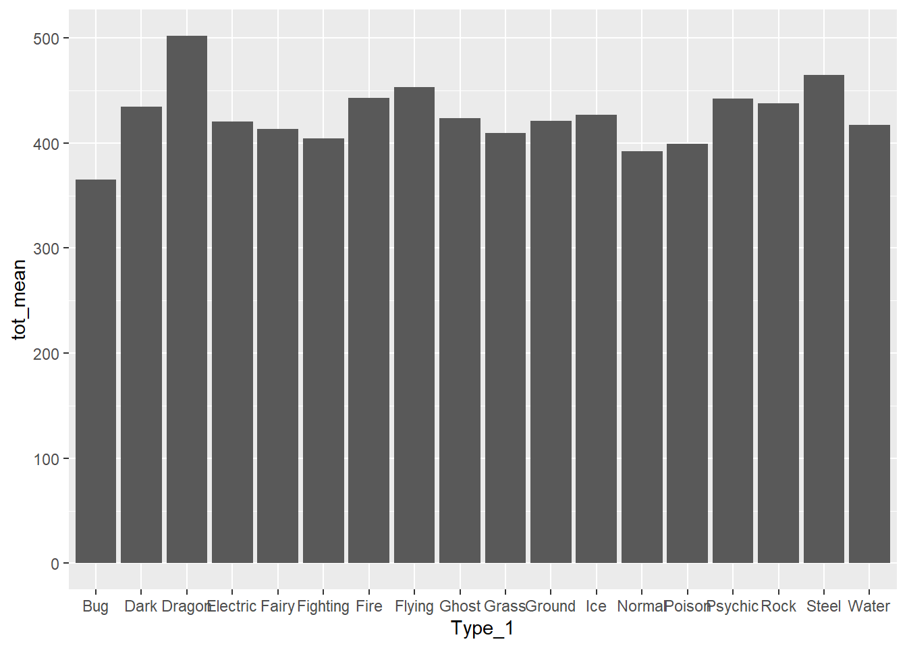
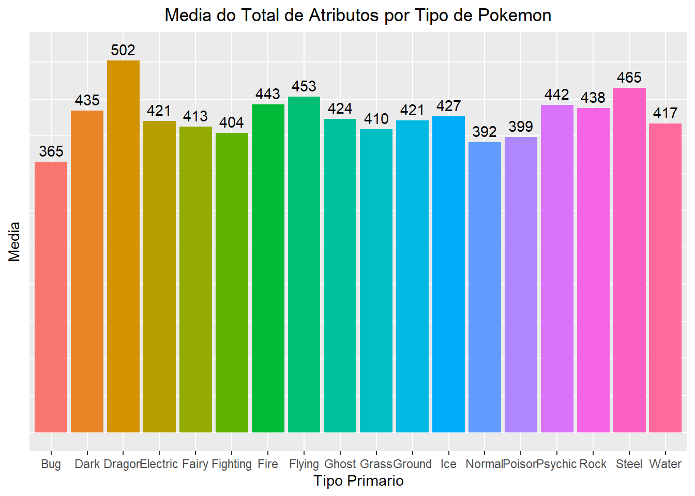
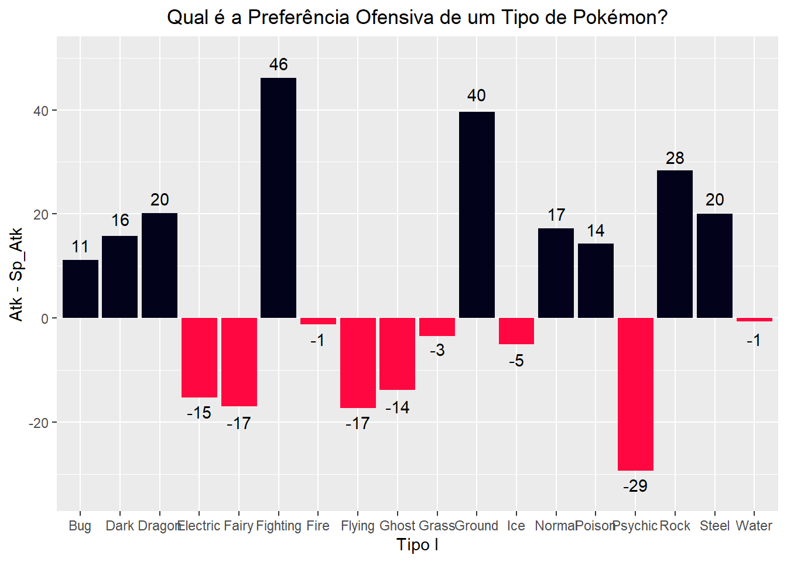
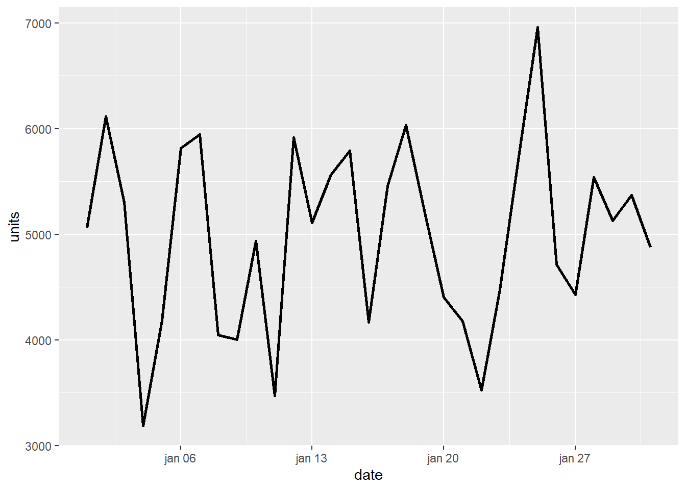
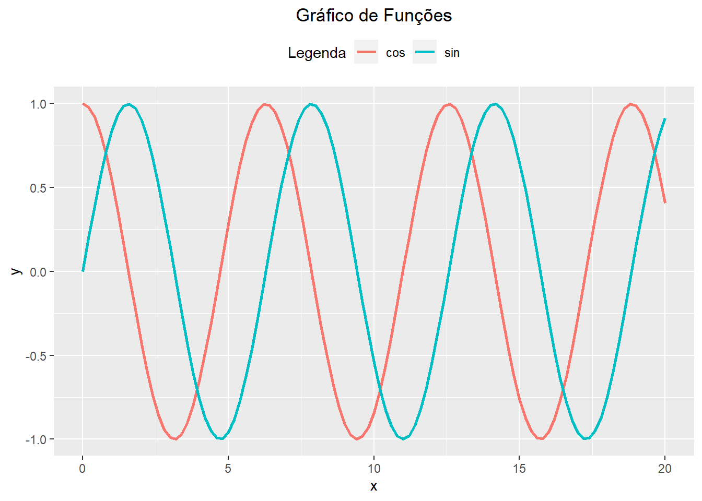
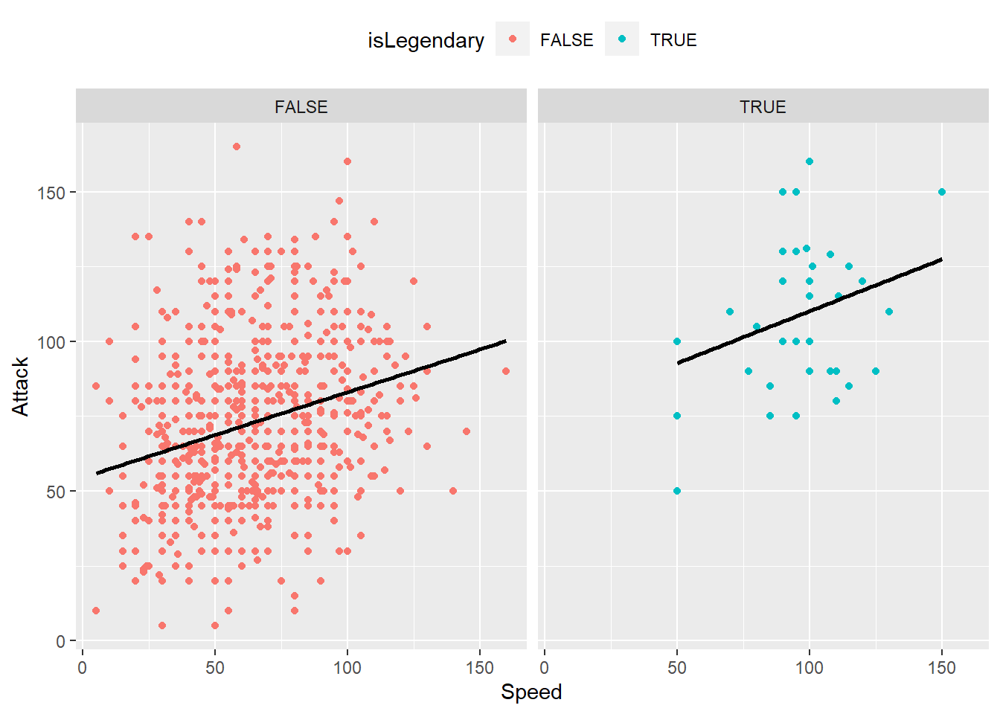

Capítulo 8 GGPlot2
Pacote para criação de gráficos baseado no livro The Grammar of Graphics, que destrincha todas as componentes de um gráfico estatístico em partes individuais.

Grammar of Graphics.
Vamos aos componentes eu a biblioteca se baseia:
Data: Dados que serão utilizados para visualização;
Aesthetic (Estética): Argumentos para realizar a visualização dos dados;
x,y:variável em cada eixo;colour:variável para colorir objetos geométricos ;fill:variável para colorir dentro de objetos geométricos;group:forma em que os dados podem ser agrupados;shape:formato dos pontos;linetype:tipo de linha a ser utilizado;size:escala utilizada para pontos, retângulos;alpha:transparência dos objetos geométricos.
Objetos geométricos: determinam o tipo de gráfico;
Facets: para múltiplos gráficos diferindo por grupos;
Statistics: Informações estatísticas como médias, quantidade de ocorrências;
Cordenadas: Tipo de coordenada, pode ser cartesiana, polar e de projeção;
Temas: Fonte, cores, tamanho, formato dos objetos do gráfico.
Observemos então como ggplot2 utiliza desta teoria na prática. Caso o leitor queira se aprofundar nos conceitos trabalhados aqui ou busque por algum gráfico em específico recomendamos R Graphics Cookbook, 2nd edition.
8.1 Diagrama de Dispersão (geom_point)
Inicialmente devemos carregar os dados ao gráfico pela função ggplot, podendo ou não já atribuir uma estética:
# A variável wt será considerada para o eixo x
# A variável mpg será considerada para o eixo y
ggplot(data = mtcars, aes(x = wt, y = mpg))
# ggplot(data = mtcars) também é uma opção válida!
# Porém aqui os eixos não serão criadosNote que apesar de termos um título e os eixos do gráfico, ainda não temos nenhuma informação! Isto acontece pois precisamos escolher o tipo de gráfico que queremos utilizar. Para isto, utilizamos o análogo da biblioteca dplyr, para a concatenação de funções na biblioteca ggplot2: o operador de soma +
Criemos então um diagrama de dispersão, também conhecido como gráfico de pontos ou scatter plot:
ggplot(data = mtcars, aes(x = wt, y = mpg)) +
geom_point()
Uma das vantagens da biblioteca é a fácil customização de seus gráficos. Abaixo observamos o gráfico anterior, mas agora trazendo a informação de quantidade de cilindros nas cores e tamanho dos pontos:
# Pacote com algumas paletas de cores:
library(RColorBrewer)
# https://r-graph-gallery.com/38-rcolorbrewers-palettes.html
# Algumas propriedades do aesthetic se dão melhor trabalhando com fatores:
mtcars$cyl <- as.factor(mtcars$cyl)
# Vamos então a criação do gráfico em si
ggplot(data = mtcars, aes(x = wt,
y = mpg,
size = cyl,
color = cyl)) +
geom_point() +
# O R já vem com diversos temas já prontos, podemos visualizá-los em:
# https://ggplot2.tidyverse.org/reference/ggtheme.html
theme_bw() +
# labs é uma função padrão para mudar o nome do título ou de eixos do gráfico:
labs(title = 'Diagrama de Dispersão') +
# theme modifica diversas propriedades estéticas nos gráficos, aqui estamos interessados em centralizar nosso título:
theme(plot.title = element_text(hjust = 0.5)) +
# A biblioteca RColorBrewer traz diversas opções para modificar a paletta
# de cores dos gráficos.
# Esta pode ser de forma automática:
#scale_colour_brewer(palette = 'Dark2')
# Ou de forma manual:
scale_color_manual(values = c('#EB2E23', '#29E2F2', '#313FDB')) # A escolha de paletas de cores dá uma aula por si só!
# É importante estar atento a algumas considerações:
# 1. Trabalhar com a mesma paleta o projeto inteiro
# 2. A paleta precisa fazer sentido para o projeto/tipo
# de propriedade que está informando
# 3. As cores não podem ser muito saturadas ou de difícil visualização
# Abaixo temos dois sites que utilizo bastante para criação de paletas de cores:
# https://color.adobe.com/pt/create/color-wheel
# https://paletadecores.com8.2 Centralizando o Título de Gráficos
A visualização de gráficos pode causar certa estranheza quando este está desalinhado ou mal formatado. Uma das configurações iniciais que recomendo ao realizarmos a construção é a execução do código abaixo:
theme_update(plot.title = element_text(hjust = 0.5))A função theme_update altera as configurações de gráfico padrões nos próximos gráficos realizados. plot.title altera configurações em relação a posição do título, enquanto element_text(hjust = 0.5) informa que queremos os títulos centralizados no centro dos gráficos. Por padrão os gráficos de ggplot2 não tem títulos centralizados e, por questões estéticas, recomendo deixá-los alinhados ao centro. Outras configurações podem ser adicionadas como padrão quando estivermos trabalhando, mas começaremos com esta.
8.3 Gráficos de Barras (geom_bar e geom_col)
Na biblioteca ggplot2 temos dois tipos de gráficos de barras. O primeiro, geom_bar, é utilizado quando queremos que o eixo \(y\) seja a frequência de alguma categoria ou grupo, enquanto o segundo, geom_col, quando o eixo \(y\) for uma coluna do conjunto de dados.
Vamos utilizar a função geom_bar para visualizar a frequência de Tipos de pokémon no conjunto pokemon_stats:
ggplot(data = pokemon_stats, aes(x = Type_1)) +
geom_bar() 
Na prática queremos de um pouco mais de vida nos nossos gráficos, vamos formatá-lo para que este fique visualmente mais atrativo:
# Vamos atribuir cores a cada atributo utilizando `fill` na estética:
ggplot(data = pokemon_stats, aes(x = Type_1,
fill = Type_1)) +
geom_bar() +
# Como cada barra é um atributo diferente, a legenda não faz muito sentido
# e dessa forma será retirada:
theme(legend.position = 'none') +
# É difícil visualizar a quantidade exata de cada barra no gráfico anterior
# por isso vamos atribuir a quantidade de cada categoria em cima de cada barra:
geom_text(aes(label = ..count..), stat = "count",
color = 'black', vjust = -1) +
# Alterar o eixo y para que o texto anterior não fique cortado:
ylim(0,110) +
# Por fim, vamos retirar os valores do eixo y:
theme(axis.text.y=element_blank(),
axis.ticks.y=element_blank()) +
# e formatar o nome dos eixos e título:
xlab('Tipo Primario') +
ylab('Quantidade') +
ggtitle('Quantidade de Pokemons por Tipo')Alunos mais ansiosos podem estar pensando:
MEU DEUS! COMO EU VOU LEMBRAR DE TODAS ESSAS CONFIGURAÇÕES?!
Na realidade nós não lembramos de todas elas de cara. Grande parte das funções acabamos por decorar pela experiência com a linguagem, enquanto outras apenas realizamos uma busca rápida para resolver nosso problema.
Além disso, podemos utilizar dados obtidos por operações no dplyr como entrada para os gráficos do ggplot2. Aqui vamos criar um conjunto de dados com a média de cada Tipo de pokémon e então criar um gráfico de barras com a função geom_col com o valor para cada barra:
# Pré-processamento dos dados. Aqui utilizaremos a biblioteca dplyr
# do capítulo anterior para termos um conjunto com a média do total
# de status de pokémons por tipo:
pokemon_stats %>%
select(Type_1, Total) %>%
group_by(Type_1) %>%
summarise(tot_mean = mean(Total)) %>%
arrange(tot_mean) %>%
# Aqui a função pipe, %>%, também pode ser utilizada para informar que o conjunto de dados da esquerda será o input para a função da direita!
ggplot(aes(x = Type_1, y = tot_mean)) +
geom_col() 
Novamente, podemos melhorar e muito este gráfico!
# Pré-processamento dos dados
pokemon_stats %>%
select(Type_1, Total) %>%
group_by(Type_1) %>%
summarise(tot_mean = mean(Total)) %>%
arrange(tot_mean) %>%
ggplot(aes(x = Type_1, y = tot_mean, fill = Type_1)) +
geom_col() +
# Retirada da legenda
theme(legend.position = 'none') +
# Adiciona os valores de cada barra
geom_text(aes(label = round(tot_mean)),
color = 'black', vjust = -.5) +
# Retirada dos valores do eixo y
theme(axis.text.y=element_blank(),
axis.ticks.y=element_blank()) +
# Aumentar o alcance do eixo y para que os valores não fiquem cortados
ylim(0,515) +
# Mudar o nome de cada eixo e adicionar um título:
xlab('Tipo Primario') +
ylab('Media') +
ggtitle('Media do Total de Atributos por Tipo de Pokemon')
DESAFIO: Cada tipo de pokémon é favorável a um tipo de status. Em relação ao status ofensivo, temos a seguinte pergunta: um tipo é mais favorável ao Ataque ou Ataque Especial? No gráfico abaixo temos uma análise inicial para isto! Execute cada linha do código abaixo separadamente e tente reproduzir e comentar os resultados!
pokemon_stats %>% select(Type_1, Attack, Sp_Atk) %>%
group_by(Type_1) %>%
summarise(atk_minus_sp = mean(Attack) - mean(Sp_Atk)) %>%
mutate(pos = (atk_minus_sp > 0)) %>%
ggplot(aes(x = Type_1, y = atk_minus_sp, fill = pos)) +
geom_col() +
scale_fill_manual(values = c("#ff0841", "#02031a"), guide = 'none') +
labs(y = 'Atk - Sp_Atk',
x = 'Tipo I',
title = 'Qual é a Preferência Ofensiva de um Tipo de Pokémon?') +
geom_text(aes(label = round(atk_minus_sp),
y = round(atk_minus_sp) +
ifelse(round(atk_minus_sp) >= 0, 3, -3)),
position = position_dodge(width = 0.9),
colour = 'black') +
ylim(-33, 50)
8.4 Gráficos de Linhas (geom_line)
Muitas vezes queremos visualizar como uma ou mais variáveis se alteram em relação ao tempo ou algum outra informação. Para isto podemos utilizar gráficos de linhas pela função geom_line. Para isto utilizaremos um conjunto de dados de vendas em razão do tempo:
vendas <- read_csv("G:/Meu Drive/Dados/vendas.csv")## Rows: 31 Columns: 2
## ── Column specification ────────────────────────────────────────────────────────
## Delimiter: ","
## chr (1): date
## dbl (1): units
##
## ℹ Use `spec()` to retrieve the full column specification for this data.
## ℹ Specify the column types or set `show_col_types = FALSE` to quiet this message.# A data dos dados não está no formato padrão do R
str(vendas)## spec_tbl_df [31 × 2] (S3: spec_tbl_df/tbl_df/tbl/data.frame)
## $ date : chr [1:31] "01/01/2010" "02/01/2010" "03/01/2010" "04/01/2010" ...
## $ units: num [1:31] 5064 6115 5305 3185 4182 ...
## - attr(*, "spec")=
## .. cols(
## .. date = col_character(),
## .. units = col_double()
## .. )
## - attr(*, "problems")=<externalptr># Podemos transformar a data pela função as.Date
vendas$date <- as.Date(vendas$date, format = '%d/%m/%y')
# Tabela com todos os formatos possíveis:
# https://www.r-bloggers.com/2013/08/date-formats-in-r/Com os dados tratados podemos então elaborar o gráfico:
ggplot(vendas, aes(x = date, y = units)) +
geom_line(size = 1)
Podemos alterar o formato da linha, adicionar pontos a cada informação observada dentre outras alterações:
ggplot(vendas, aes(x = date, y = units)) +
geom_line(size = 1, linetype = 'dashed') +
geom_point(size = 2)8.5 Gráfico de Funções (stat_function)
Além de visualizar gráficos, podemos utilizar a função geom_line para visualização de funções:
ggplot(data.frame(x = c(0, 20)), aes(x = x)) +
stat_function(fun = cos, geom = 'line',
aes(colour = 'cos'),
size = 1) +
stat_function(fun = sin, geom = 'line',
aes(colour = 'sin'),
size = 1) +
theme(legend.position = 'top') +
labs(title = 'Gráfico de Funções',
colour = 'Legenda')
8.6 Histogramas (geom_histogram)
Histogramas são bem úteis para termos uma intuição sobre a distribuição dos dados, principalmente se uma determinada variável possui ou não distribuição normal. Para criarmos basta chamarmos a função geom_histogram:
ggplot(data = pokemon_stats, aes(x = Total)) +
geom_histogram(binwidth = 50,
color = 'black',
fill = 'blue',
alpha = .3,) +
# Facilita a visualização da variável no eixo x:
scale_x_continuous(breaks = seq(150, 700, 50))Há duas formas de criarmos um histograma: fornecendo uma quantidade de bins, os retângulos do gráfico, ou estabelecendo um tamanho a cada retângulo com o parâmetro binwidth.
8.7 Boxplots (geom_boxplot)
Boxplots são gráficos que resumem a distribuição do nosso conjunto de dados, além de indicar possíveis outliers:
ggplot(pokemon_stats, aes(x = Type_1,
y = Total,
fill = Type_1)) +
geom_boxplot() +
theme(legend.position = 'none')8.8 Facets (facet_grid)
Facets são a forma que a biblioteca ggplot2 utiliza para realizar vários tipos de mesmo gráfico de acordo com variações em grupos. Os gráficos são criados normalmente e chamamos a função facet_grid para definir quais tipos de dados serão utilizados para cada linha ou coluna.
ggplot(data = pokemon_stats, aes(x = Speed, y = Attack,
color = isLegendary)) +
geom_point() +
geom_smooth(method = "lm", se = FALSE, col = "black",
formula = y ~ x) +
facet_grid(isLegendary~.) +
theme(legend.position = "top")
ggplot(data = pokemon_stats, aes(x = Speed, y = Attack,
color = isLegendary)) +
geom_point() +
geom_smooth(method = "lm", se = FALSE, col = "black",
formula = y ~ x) +
facet_grid(.~isLegendary) +
theme(legend.position = "top")
8.9 Bibliotecas Auxiliares
Além disso, há diversas bibliotecas que interagem com a ggplot2 para a criação de gráficos. Vamos há algumas e seus exemplos:
8.9.1 cowplot
Biblioteca que facilita a criação de vários gráficos em uma mesma figura:
library(cowplot)
poke1 <- ggplot(data = pokemon_stats, aes(x = Type_1,
fill = Type_1)) +
geom_bar() +
theme(legend.position = 'none') +
geom_text(aes(label = ..count..), stat = "count",
color = 'black', vjust = -1) +
ylim(0,110) +
theme(axis.text.y=element_blank(),
axis.ticks.y=element_blank()) +
xlab('Tipo Primario') +
ylab('Quantidade') +
ggtitle('Quantidade de Pokemons por Tipo')
poke2 <- pokemon_stats %>% drop_na %>%
ggplot(aes(x = Type_2, fill = Type_2)) +
geom_bar() +
theme(legend.position = 'none') +
geom_text(aes(label = ..count..), stat = "count",
color = 'black', vjust = -1) +
ylim(0,110) +
theme(axis.text.y=element_blank(),
axis.ticks.y=element_blank()) +
xlab('Tipo Secundário') +
ylab('Quantidade') +
ggtitle('Quantidade de Pokemons por Tipo')
ggdraw(xlim = c(0,2), ylim = c(0,2)) +
draw_plot(poke2, x = 0, y = 0, width = 2, height = 1) +
draw_plot(poke1, x = 0, y = 1, width = 2, height = 1) 8.9.2 GGally
A biblioteca GGally adiciona diversas funções ao ggplot2 principalmente relacionadas a reduzir a complexidade na hora de criar vários gráficos de uma vez:
library(GGally)## Registered S3 method overwritten by 'GGally':
## method from
## +.gg ggplot2pokemon_stats %>%
select(Total, Attack, Defense, Sp_Atk, Sp_Def, Speed) %>%
ggpairs(diag = list(continuous = wrap('barDiag',
binwidth = 50,
fill = 'blue',
alpha = 0.2)),
progress = FALSE)